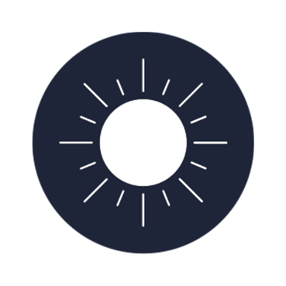
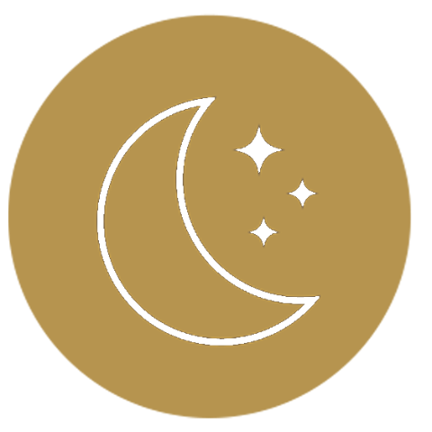
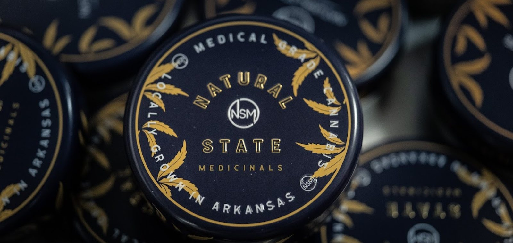

Decimal System
No matches found
Try a strain name, a terpene, a product, or a glossary term.
Try searching for
{{ c.bestUse }}
{{ c.parentsText }}
{{ c.breeder }}
1 of 2 selected · {{ compare.firstName }} · Tap another strain to compare.
{{ quiz.question }}
{{ quiz.result.name }}
{{ quiz.result.bestUse }}
{{ quiz.why }} {{ quiz.delivery }}
Education Guide
A patient's companion to the plant, the practice, and the products.
We love our plants, our people, and our patients, in that order, and all at once.
This guide is not a sales sheet. It is a patient's companion, a calm, unhurried walk through how cannabis meets the body, what the plant is actually made of, and how to use it with intention rather than guesswork.
Read it cover to cover, or keep it nearby and return to the parts you need. However you use it, our hope is the same: that it helps you find your natural state, of wellness, balance, and relief.
From your neighbors at Natural State Medicinals
The System
You were born with the lock. The plant simply brought a key.
Most people go through life without knowing this system exists. It works in the background, tending small fires before they become large ones. Appetite, mood, sleep, discomfort: there is a set of receptors and signaling compounds helping keep these things in balance.
You notice it most when something is off, in the same way you only think about a roof when it starts to leak. This network is called the endocannabinoid system, and it is the reason cannabis can do what it does.
Concentrated in the brain and nervous system. This is where the mind-level effects of THC take hold, the shift in mood, perception, and appetite that people most associate with cannabis.
Found mostly in immune tissue and the periphery. Tied to inflammation and bodily relief, the quieter, physical side of how cannabis works.
Together they are the lock to cannabis's key, and it turns out we were born with the lock already installed.
The Entourage Effect
Think of the plant as an orchestra, not a soloist.
No single compound tells the whole story. THC, the minor cannabinoids, and the aromatic terpenes each play a part, and they shape one another as they play. That cooperation has a name.
A single instrument can carry a tune. THC alone will get the job done.
Then the minor cannabinoids join in. CBD, CBG, CBN, and CBC each add a different color to the sound.
Aromatic terpenes fill the spaces between, steering the experience toward calm, focus, or ease.
Played together, the compounds shape one another and create something fuller than any one could alone. That is the entourage effect.
Cannabinoids
The headlines usually belong to THC, yet much of the plant's character comes from lesser-known cannabinoids. There are more than one hundred identified so far. These five do most of the talking. Scroll to move through each one.
Typically present {{ c.prevalence }}
Sativa, Hybrid, Indica
Every conversation about cannabis starts here. These three words are shorthand, not science, a way to set expectations before the terpenes and cannabinoids tell the real story. Modern genetics have made the lines blurry enough that most researchers have moved on from the taxonomy entirely. But the categories stick because they are useful, the same way cardinal directions are useful even though the world is more complicated than north and south.
You will see these colors again throughout the flower library
Traditionally associated with daytime use, brighter, more cerebral, more likely to keep you moving than slow you down. The plants grow tall and thin with long, narrow leaves and a longer flowering cycle. Energetic and uplifting are the words most patients reach for. The science says the terpene profile matters more than the label, but in practice sativas tend to carry higher concentrations of limonene and terpinolene, which track with those brighter, more head-forward effects.
The strain you reach for when you have somewhere to be, and want to actually want to go there.

A cross of the two, bred to carry qualities from both sides of the family. Most of what you will find in the flower library is a hybrid, leaning one direction or the other depending on its parents. The middle path, and by far the most common one. This is also where the category system starts to show its limits: a hybrid leaning hard indica feels nothing like one leaning sativa, even if both carry the same label. The terpene profile and cannabinoid ratios are where the actual answer lives.
The honest workhorse of the catalog, versatile by design.

Traditionally associated with evenings, heavier, more physical, more body than brain. The plants are shorter and bushier than sativas with broader leaves and a faster flowering time. Relaxing, sedating, and couch-friendly are the words that follow indica around. There is a reason the old joke calls it in-da-couch.
Myrcene, the most common terpene in cannabis and one that carries a pronounced sedating quality, tends to run higher in indica-dominant cultivars, which is probably where the reputation comes from. That said, a low-myrcene indica can feel surprisingly clear-headed, and a high-myrcene sativa can put you on the couch just as fast.
The one that makes resting feel like something you chose.
Two indicas can feel completely different.
The category sets an expectation. The terpenes and cannabinoids inside decide the experience. That is why this guide leans on lab data, not just the label.
Read about terpenes →Terpenes
Terpenes are the aromatic oils that give each cultivar its smell, its flavor, and much of its feel. They are the fingerprint of a strain. Choose one to explore.
The Flower
Every cultivar carries its own lineage and character. Filter by type, search by name or trait, and select any strain to read its story and lab results.
Effects are the feelings most often reported for each cultivar, drawn from patient experience and Leafly. Individual experience always varies.
No strains match
{{ s.description }}
{{ s.parentsText }}
{{ s.breeder }}
{{ s.phenome }}
{{ prodDrawer.name }}
{{ prodDrawer.description }}
{{ t.desc }}
{{ prodDrawer.howTo }}
Good flower is not a one-and-done crop. It is months of small, repeated steps between the seed and the shelf, and dozens of hands along the way.
It starts with a cutting
10 to 14 days to rootNothing is left to chance. Every plant begins as a clone taken from a healthy mother, so the flower you eventually meet is the same cultivar, batch after batch. The cuttings root in clean rockwool, hand-set one cell at a time, and spend their first weeks under a careful eye.
The vegetative weeks
3 to 8 weeksUnder long days of light the plants stretch, branch, and build the frame that will one day carry flower. They are topped and trained by hand, fed and watched daily, and given room to grow strong before they are ever asked to bloom. It is patient, unglamorous work, and it is where quality is quietly decided.
Into flower
7 to 10 weeksWhen the light shortens, the plant turns its energy to flower. Over the following weeks the canopy fills in, the buds swell, and trichomes frost over with the cannabinoids and terpenes that define each strain. Our growers read the plants by sight and by nose, deciding harvest not by the calendar but by the trichomes themselves.
Harvest, by hand
cut by hand, over daysThere is no machine for this part. Plants are cut and hung whole, branch by branch, in a climate held steady for a slow start to the dry. Handling stays gentle so the delicate trichomes and terpenes survive the trip from grow room to drying room intact.
Trimmed and slow-cured
2 to 4 weeks, then longerOnce dry, the flower is hand-trimmed and moved into a slow cure, where time does the last of the work. Rushing here costs aroma and smoothness, so we do not. The cure is what turns good flower into flower worth remembering, and it cannot be hurried.
The hands behind it
every single dayBehind every eighth is a person who chose this work: growers, trimmers, and packagers who are veterans, parents, and neighbors from right here in Arkansas. They know these patients are people managing real pain, real sleep, real quality of life, and they grow like it matters. Because it does.
Tested, then finished
before it ever shipsBefore anything is packaged, every batch is lab-tested for potency, terpenes, and safety, the same numbers you can read on each strain in this guide. We put our entire, unedited testing results on every product as a scannable QR code, so nothing is hidden and you can read the full panel yourself. Only then is it weighed, sealed, and labeled for the dispensary shelf. From a cutting in a gloved hand to the jar in yours, it stays in careful hands the whole way.
Plant to Product
Every product on the shelf starts as the same thing: the sticky resin on the flower, where the cannabinoids and terpenes from earlier in the guide actually live. This chapter follows that resin from harvest day to the jar, one step at a time. By the end, you will be able to read a label and pick a format with confidence.
Start with the plant
The difference starts on harvest day. Cured material is dried and cured the traditional way before it is extracted. Live material is frozen within hours of the cut and never dried at all. Live is the premium path: more of the plant’s terpenes make it into the jar, and you can taste it. Cured is the classic, familiar path.
From harvest to jar
Scroll to watch both, then pick a jar.Live: in the jar on day one, with nearly all of its aroma.
Cured: in the jar around day 30, with about half.
Aroma levels are illustrative. Real terpene loss depends on the strain, the drying room, and how carefully the plant is handled.
These are general tendencies, not rules. The strain, the grower, and how it is handled shape flavor as much as the method does.
Get the resin out
Live or cured, the resin still has to come off the plant. Methods that use a make resin. Methods that use only ice water, heat, and pressure make rosin. Tap a method to see how it works and what it trades.
{{ x.desc }}
{{ x.tradeoff }}
Clean comes from the process, not the method: every solvent-extracted batch is purged and every batch is lab-tested before it ships.
Flavor, potency, and scale are rated relative to one another, not on an absolute scale. No method is best at all three, which is why we run more than one.
See what it becomes
The same oil can be finished a dozen ways. Texture is mostly a matter of how it is agitated, , and held as it comes off the extraction, and it changes how a concentrate handles, tastes, and dabs. Here is the whole shelf, side by side.
Texture only matters if you . If you would rather not, carts and disposables come pre-filled and ready to go. A is only needed for the formats below.
The consistency scale
Pick a format to read it.{{ conc.cur.description }}
A note on temperature: lower temps (roughly 500 to 580°F) preserve terpenes and flavor with a lighter vapor; higher temps (580 to 650°F) trade some flavor for bigger, warmer clouds. Terpene-heavy formats like sauce and raw reward the low end.
How we make ours
From the harvest room to the label, these four steps stand behind every jar we send out.
Our carts run on CCell EVO MAX full-ceramic hardware, so no metal wick or cotton ever touches the oil.

Choose how you take it
Concentrates are one way in. The same resin also goes into vapes, syringes, troches, tinctures, edibles, and topicals. What really separates them is the route: how it enters your body, and so how soon you feel it and how long it stays.
Vapes and concentrates
Inhaled through a vape or a dab. The fastest route and the easiest to adjust: one draw, wait, decide. This is where live and cured, extraction, and texture all come into play.
{{ p.panel.description }}
{{ t.desc }}
{{ p.panel.howTo }}
Troches and tinctures
Held under the tongue, it absorbs through the mouth and skips most of digestion. Steadier than inhaling, quicker and more predictable than an edible, and no smoke or vapor.
{{ p.panel.description }}
{{ t.desc }}
{{ p.panel.howTo }}
Edibles
Eaten, it goes the long way, through digestion. It arrives late and stays long, so start low and wait a full two hours before taking more.
{{ p.panel.description }}
{{ p.panel.howTo }}
Topicals and suppositories
Not inhaled, not swallowed. Topicals work on the skin where you apply them, without a high for most patients. Suppositories absorb in the lower digestive tract, for patients who cannot take medicine by mouth.
{{ p.panel.description }}
{{ t.desc }}
{{ p.panel.howTo }}
Build your pick
Put it all together. Each question comes from a step above. Answer as many as you like, skip the rest, and the formats re-rank as you go.
A starting point for a conversation, not medical advice. Your doctor and your dispensary pharmacist can help you choose.
Take what you learned to your dispensary, or see what is on the shelf near you today.
Using It Well
Start low. Go slow. The body rarely rewards impatience.
A modest dose leaves room to learn how a product affects you. A large one can turn an experiment into an ordeal. Most experienced patients arrived at their preferred dose gradually, not all at once.
Onset explorer
The route matters more than the dose.{{ onset.cur.note }}
Good to know
Five things worth knowing that do not fit anywhere else.A lot of noise, not much happening
Old stoner slang, in the same family as bogarting a joint. Barking on the grass is the person in the circle who is all talk, plenty of noise, plenty of opinions, holding court while the joint slowly burns down in their hand and never makes it around. It is a social habit, not a strain effect. The cure is simple: less talking, more passing. Keep it moving, and keep it kind.
Cool, dark, and sealed
Cannabis does not ask for much. A cool, dark place and a sealed container do most of the work. Heat, light, and air slowly diminish quality over time.
Keep flower in an airtight, light-proof container, glass with a good seal is ideal, away from windows and anything that runs warm. The four enemies are light, air, heat, and humidity. Manage those and the flower keeps its aroma, potency, and feel far longer.
A two-way humidity pack (Boveda, Integra Boost, or similar) holds flower in the ideal 58 to 62 percent range, dry enough to avoid mold, moist enough to keep trichomes intact. For concentrates and cartridges, a small desiccant pack and a cool, dark drawer do the trick.
For everyday use, a sealed jar in a cool cabinet is plenty. For longer storage, keep it sealed and cool but skip the freezer, frozen trichomes turn brittle and snap off when handled. Store edibles and tinctures per their label, and keep everything well out of reach of children and pets.
A responsible patient
Medical cannabis is legal here because Arkansas voters wrote it into the state constitution. That gives patients real protection, and it comes with rules. Knowing them is part of using it well.
In November 2016, Arkansas voters passed Amendment 98. It is not a plain law that one legislature can undo on a bad afternoon. It sits in the state constitution. It says this: if you have a qualifying condition and a doctor signs off on it, you can register with the Arkansas Department of Health, get a card, and buy cannabis from a licensed dispensary. The card is good for a year. Then you renew it. Growers like us are licensed and inspected, and the plant is tracked from the room it grew in to the jar in your hand. That is the whole shape of it.
The amendment names the conditions, and a licensed health care provider has to put it in writing that you have one. Who counts as that provider has been argued over and changed more than once, so ask your clinic or check the state portal before you make an appointment.
- Cancer, glaucoma, HIV or AIDS, hepatitis C, ALS, Crohn’s disease, ulcerative colitis
- Tourette’s syndrome, Alzheimer’s disease, severe arthritis, fibromyalgia, PTSD
- Wasting away (cachexia), nerve pain in the hands and feet, or bad nausea
- Pain that will not let up, after six months of other treatment has not fixed it
- Seizures, including epilepsy, and bad muscle spasms, including multiple sclerosis
- Any other condition the Arkansas Department of Health adds to the list
Two and a half ounces in any fourteen days. That covers flower and the things made from it, and the dispensary keeps the count for you at the register. Keep what you buy in the package it came in, label and all.
The amendment says a registered patient who follows the program should not be arrested, charged, or stripped of a right for using medical cannabis. That is a real protection, and it is worth knowing it is not a shield. Police still make stops and still make arrests, and your card is a defense you may have to raise, sometimes in front of a judge. The protection has edges, too. It does not cover using in public, at a school, in a jail, or on a bus. It does not cover driving or boating while you feel it. An employer can still keep its own rules. When something is unclear, ask your dispensary or the state program before you guess.
You do not have to take our word for any of this. Here is the amendment in its own words, and the state portal where you apply, renew, or check on your card. This page is a plain summary for patients, not legal advice.
For the record: Arkansas law does not permit qualified patients to grow cannabis at home. Unfortunately, local and chain bookstores do not coordinate with the state about its laws, and they are still selling highly instructional, deeply detailed grow guides. The three most egregious are:
- The Cannabis Grow Bible, Greg Green. The widely cited beginner-to-hobbyist manual bridging botany and daily care. Covers lighting (including LEDs), soil vs. hydroponics, breeding, and extraction.
- Marijuana Horticulture: The Indoor/Outdoor Medical Grower's Bible, Jorge Cervantes. A heavily illustrated 500-plus-page reference on plant anatomy, nutrients, pest management, and greenhouse setups.
- Cannabis Grower's Handbook, Ed Rosenthal and David Downs. A modern, science-forward guide to cultivation, lighting, and harvest.
If it comes on too strong
Too much THC at once can tip a good feeling into a racing, uneasy one. It passes, and it is not dangerous, but it is worth avoiding. The fix is almost always less: a smaller dose, more time between, and a strain that leans calm rather than racy.
Find somewhere comfortable, slow your breathing, and drink some water. Remind yourself it will fade on its own, usually within an hour or two. Nothing is wrong.
A well-known kitchen trick: a sniff or small chew of whole black peppercorns. Its terpenes, the same caryophyllene found in cannabis, can take the edge off. CBD alongside THC softens the same edge.
Note what you took and how much, then start lower and go slower. High-myrcene, indica-leaning flower and balanced THC-to-CBD products tend to feel gentler than potent, racy sativas.
Need a distraction?
Fill in the picture
If you use cannabis, say so. Mention what you use, how often, and what effects you notice. Useful medical advice depends on accurate information. Guesswork helps no one.
Cannabinoids are processed by the same liver enzymes that handle many prescriptions. That means cannabis can raise or lower the levels of certain medications, blood thinners, some seizure and heart medicines, and sedatives among them. Your doctor can only watch for that if they know it is in the mix.
Regular cannabis use can change how much anesthesia you need and how you recover from it. Anesthesiologists increasingly ask about it for exactly this reason. Tell your care team before any procedure, and follow their guidance on pausing beforehand.
You are a patient, not a defendant. A good provider treats cannabis like any other part of your health history, something to account for, not to judge. The more complete the picture, the better the care.
Our strains, a few cannabis terms, and some Arkansas landmarks. Tap a square and type. No pencil required.
There usually is not one universal answer. The best product is the one that fits your needs, your schedule, and your tolerance, not the one with the loudest claims.
The Joint Journal
The body keeps no record, so it helps to keep one yourself. A short note after each session turns scattered impressions into a pattern you can actually use.
Over time, the journal becomes the most personal page in this guide: your own map to what works.
"Peace is our natural state of being."
Choose what you track
Copy it into your phone's notes
Choose the fields you want above, then tap copy. Open a new note on your phone and paste. No app, no account, no tracking, just a simple record that stays with you.
Your selections above shape this template, and you can edit it directly here before you copy.
Recipes
Fifteen ways to put NSM products to work. Start low on the dose, give it time, and eat something good.
Cooking with cannabis is its own kind of dosing. Make your base, dose it right, then scroll through the fifteen recipes built on it below. Start low, label everything, and keep it away from anyone it is not meant for.
Before you cook, make the medicine
Almost every recipe below is built on an infused base, a fat or a sweetener that carries the cannabinoids into the dish. We make an infused tincture you can substitute straight in, but the oil, butter, sugar, and cooking tincture you will make yourself. Here is the whole base, start to finish.
{{ b.lead }}
- {{ bs }}
Worth knowing: {{ b.note }}
Short on time? Our infused tincture drops straight into most recipes, no decarb or straining required.
Edible milligram calculator
Work in two steps, just like the pros. First tell it about your infusion to get the strength per teaspoon. Then tell it how much of that oil goes into your recipe and how many servings you cut it into. These are theoretical maximums, real home infusion loses some potency, so treat the numbers as a ceiling and start low.
This estimate assumes a strong, near-complete infusion, so it leans high on purpose. Real edibles often come out a little weaker, never stronger, so treat this as the ceiling. A common starting dose is 2 to 5mg. If a serving lands higher than you want, cut the recipe into more servings, take less, and wait at least two hours.
- {{ ing }}
- {{ st }}
{{ r.note }}
Named for the Arkansas towns and back roads we love, and made for the easy days in between.
State Line keeps it simple and keeps it fun. Crafted with the same care as everything else we make, just looser, friendlier, and built for hanging out. Good flavors, easy formats, nothing fussy: chews, carts, and disposables.
GRAB A COUPLE, CALL YOUR PEOPLE, GO ENJOY THE DAY.
Glossary
{{ g.def }}
No terms match your search
For use by qualifying patients only. Keep out of reach of children. This product is not approved by the FDA to treat, cure, or prevent any disease. Marijuana use during pregnancy or breastfeeding poses potential harms. This guide is education, not medical advice.